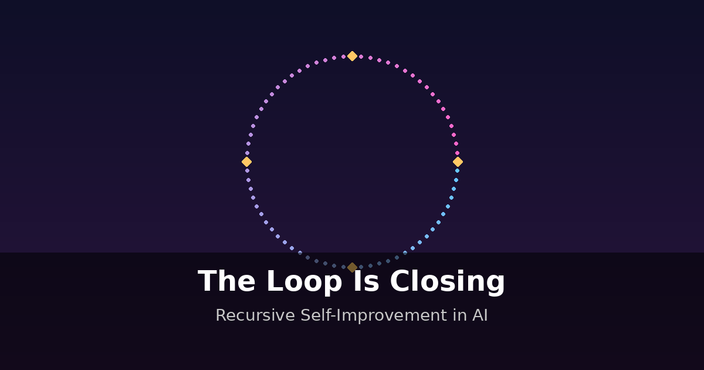

Ninety percent of Claude's code is written by Claude. Not by the engineers at Anthropic who designed the model, but by a previous version of the model itself — iterating on its own codebase, proposing changes, testing them, shipping them. An Anthropic spokesperson told Fortune that company-wide, the figure for AI-generated code is between 70% and 90%. At some leading engineers' desks at both Anthropic and OpenAI, it's reportedly 100%.

That number alone should stop you. It means the tools that are reshaping entire industries are increasingly built not by human hands but by earlier versions of themselves. The concept has a name that has bounced around AI safety circles for decades — recursive self-improvement, or RSI — and as of spring 2026, it has migrated from philosophical thought experiment to operational reality at every major AI laboratory on earth.
From Thought Experiment to Operating Procedure
The idea is older than most people realize. In 1965, the British mathematician I.J. Good described what he called an "intelligence explosion" — an ultra-intelligent machine that could design even better machines, creating a feedback loop where "the intelligence of man would be left far behind." For sixty years this remained a theoretical curiosity, the kind of thing discussed at philosophy conferences and in science fiction novels. It is not theoretical anymore.
At the World Economic Forum in Davos this January, the CEOs of the two companies arguably closest to the frontier — Dario Amodei of Anthropic and Demis Hassabis of Google DeepMind — both spoke publicly about pursuing self-improvement research. Hassabis was strikingly direct: "It remains to be seen — can that self-improvement loop that we're all working on — actually close, without a human in the loop." The phrasing is worth sitting with. Not "whether we should work on this" but "whether the loop we're building can close." The decision to pursue RSI, at DeepMind at least, appears to have already been made.
Anthropic's position is, if anything, more aggressive. Amodei predicted at Davos that the industry may be six to twelve months away from AI handling most or all of software engineering from start to finish. His company's own chief scientist, Jared Kaplan, has been more explicit about what comes after that: he told ControlAI that humans will face an "extremely high-risk decision" between 2027 and 2030 — whether to allow AI systems to independently train and develop the next generation of AI. Kaplan called this "the ultimate risk."
Note the tension: Anthropic's chief scientist publicly calls the thing his company is building "the ultimate risk," while the company continues building it.
The Lab Race
Every major frontier lab now has a concrete timeline for automating its own research. The specificity is new — and striking.
OpenAI has been the most explicit. In a public statement on X, CEO Sam Altman announced internal goals of having an "automated AI research intern" by September 2026, running on hundreds of thousands of GPUs, and "a true automated AI researcher" by March 2028. Altman added a caveat — "We may totally fail at this goal" — but followed it with a justification that reveals how seriously the company takes it: "given the extraordinary potential impacts we think it is in the public interest to be transparent about this." Chief scientist Jakub Pachocki described this target as "a system capable of autonomously delivering on larger research projects."
Anthropic is tracking toward what it calls "fully automated AI research" by 2027. The internal evidence suggests the company is further along than its public statements imply. Dario Amodei has cited "something like 400% efficiency improvements per year" from optimization work — coding, architecture tweaks, infrastructure engineering — creating a compound effect where identical compute yields dramatically better results each cycle. Dean Ball, a senior fellow at the Foundation for American Innovation who has written the most detailed public analysis of what RSI means in practice, calls this a "compute multiplier." An anonymous Anthropic employee captured the aspiration with uncomfortable clarity: "We want Claude n to build Claude n+1, so we can go home and knit sweaters."
Google DeepMind has taken a more measured public posture while publishing the most concrete technical results. AlphaEvolve, unveiled in May 2025, is an evolutionary coding agent that uses Gemini to generate, mutate, and select algorithmic improvements in a self-reinforcing loop. The results are not speculative: AlphaEvolve has improved FlashAttention operations by 32%, achieved a 23% speedup in kernel tiling for AI training, and — most pointedly — continuously recovers 0.7% of Google's entire worldwide compute resources. That last number sounds small until you consider Google's scale: 0.7% of their compute is a staggering amount of freed capacity, running continuously, discovered by an AI optimizing AI infrastructure. When applied to open mathematical problems, AlphaEvolve matched state-of-the-art solutions for 75% of problems and found better solutions for 20%.
Meta published a December 2025 preprint explicitly aimed at using self-improvement techniques to build superintelligence. The paper, notably, contained no mention of safety or ethics. Meanwhile, Meta's former chief AI scientist Yann LeCun left the company in late 2025 to found AMI Labs, raising $1.03 billion at a $3.5 billion valuation — the largest seed-stage investment in European history — on a thesis that the entire LLM paradigm is wrong and that "world models" built on his JEPA architecture represent the actual path to human-level AI. LeCun's departure is the highest-profile dissent from the RSI consensus: he's betting that the self-improvement loop, as currently conceived, runs into fundamental limits that make it less transformative than the frontier labs believe.
The Karpathy Moment
If the lab race is RSI behind closed doors, Andrej Karpathy blew the doors open. In March 2026, the former Tesla AI director and OpenAI co-founder released AutoResearch — a 630-line Python script, open source under MIT license, that demonstrates autonomous AI self-improvement on a single GPU.
The concept is deceptively simple. Give an AI agent a small but real language model training setup. Let it experiment autonomously — modifying the training code, running a five-minute training run, checking whether the loss improved, keeping or discarding the change, and repeating. The human writes the prompt. The AI iterates on the code. The goal, as Karpathy described it, is "to engineer agents to make the fastest research progress indefinitely and without any human involvement."
After two days, AutoResearch had processed approximately 700 autonomous experiments, finding roughly 20 additive improvements that transferred perfectly to larger models. The result: an 11% reduction in the "Time to GPT-2" benchmark, from 2.02 hours to 1.80 hours. Not a theoretical improvement on a toy problem — an 11% efficiency gain on training a real language model, discovered entirely by machine.
The repo went viral: 8.6 million views on X, over 42,000 GitHub stars within days. More importantly, the pattern proved generalizable. Shopify CEO Tobi Lütke applied the AutoResearch loop to optimize rendering speed, producing 93 automated commits that achieved 53% faster rendering and 61% reduction in memory allocations. The message was clear: this isn't just for AI research. The self-improvement loop works on anything you can score.
Karpathy called it "the self-improvement loopy era of AI." The name, playful as it sounds, may prove accurate.
The Governance Gap
Here is where the story turns from impressive to unsettling. The speed at which RSI has moved from concept to practice has massively outpaced any institutional capacity to govern it.
Dean Ball's policy analysis is the sharpest I've found on this point. He identifies the current state of affairs bluntly: there are no safety or security standards for frontier models, no cybersecurity rules for frontier labs or data centers, no requirements for explainability or testing for AI systems engineered by other AI systems, and no specific legal constraints on what frontier labs can do with the results of recursive self-improvement. California's SB 53 and New York's RAISE Act represent progress toward transparency, but Ball notes the critical gap: both rely on self-reporting without independent verification. Labs assess their own compliance. Nobody audits.
The academic community hasn't covered itself in glory either. The ICLR 2026 Workshop on AI with Recursive Self-Improvement — possibly the world's first academic workshop dedicated entirely to RSI, scheduled for April 26 in Rio de Janeiro — initially gave safety concerns minimal emphasis. The workshop website listed safety as an afterthought. When journalists from Foom Magazine pressed the organizers, Mingchen Zhuge of KAUST acknowledged they "could make the safety emphasis clearer," but defended the broad scope. Safety was subsequently added as "encouraged, optional." Optional.
David Scott Krueger, a University of Cambridge AI safety researcher, was less diplomatic about the state of the field: "It's completely wild and crazy that this is happening, it's unconscionable."
The paradox is stark. The people closest to the technology — the chief scientists, the CEOs, the researchers — freely acknowledge the risks. Kaplan calls it "the ultimate risk." Hassabis wonders publicly whether the loop can close safely. Altman hedges his timeline announcements with notes about "extraordinary potential impacts." But the organizational incentive is to keep building. Every lab operates under the same competitive logic: if we don't build it first, someone else will, and at least we'll do it responsibly. The claim to responsibility, however, rests on safety infrastructure that does not yet exist.
The Skeptical Case
Before getting swept up in the intelligence explosion narrative, it's worth steelmanning the counterargument — because there is one, and it's not trivial.
LeCun's bet against the RSI paradigm is the most prominent version. His argument, simplified: current language models are prediction machines, not reasoning engines. They can optimize within a paradigm — write better code in a known framework, tune hyperparameters, find efficiency gains — but they cannot make the kind of paradigm-shifting conceptual leaps that transform fields. AutoResearch found a nice 11% improvement, but it found it by iterating within an existing architecture, not by inventing a new one. Real scientific breakthroughs, LeCun argues, require understanding the world's causal structure in a way that token prediction fundamentally cannot achieve.
Ball frames this as his "bearish scenario": AI automation accelerates progress within existing paradigms, but the acceleration looks like driving a car faster on a highway rather than learning to fly. In this scenario, RSI produces impressive but ultimately bounded improvements. Models get better at the same rate they were already improving, just with less human labor involved. The economic impact is enormous — automated research dramatically reduces costs and increases output — but the intelligence explosion never actually detonates.
There's also a practical scaffolding problem. Current AI agents excel at short-horizon tasks — write a function, optimize a parameter, run an experiment. But AI research is not a sequence of short-horizon tasks. It requires maintaining coherent research programs over weeks and months, integrating results across subfields, recognizing when a dead end is actually a new direction. The gap between "automated experiment runner" and "automated researcher" is not just quantitative — it may be qualitative. OpenAI's September 2026 target for an AI "intern" is telling: even the most optimistic lab distinguishes between grunt work and genuine research capability.
This skepticism deserves serious weight. But it also faces a challenge: the labs pursuing RSI have consistently delivered on aggressive timelines that skeptics said were impossible. Two years ago, "AI writes 90% of its own code" would have been dismissed as Silicon Valley fantasy. It's an Anthropic press statement now.
What's Actually at Stake
The honest assessment, sitting with everything the research turned up, is this: recursive self-improvement is the most consequential development in AI right now, and it is happening with remarkably little public scrutiny.
Ball predicts that during 2026, the effective "workforces" of each frontier lab will grow from single-digit thousands to tens of thousands, and then hundreds of thousands — most of them artificial. These workforces will grow smarter each month, not only because AI was already improving rapidly but because, as Ball puts it, "their only objective will be to make themselves smarter." Whether this produces a genuine intelligence explosion or merely a very fast improvement within existing paradigms is, in my view, the most important empirical question in technology today.
The answer might not be knowable in advance. And that is precisely the problem. If the bullish case is even partially correct, the window for establishing governance, safety standards, and verification infrastructure is narrower than most people realize. Ball's proposal for independent third-party auditing organizations — modeled on financial auditing, where private entities verify compliance through transparent standards — is the most practical governance framework I've encountered. But it doesn't exist yet. Nothing does.
Miles Brundage, a former OpenAI researcher, captured the accountability gap: the major labs "have yet to explain what recursively self-improving AI means, why they think it's good, or why the greater risks are justified."
That seems like a reasonable thing to demand.
What to Watch
Several concrete markers in the coming months will signal how fast the loop is tightening:
ICLR RSI Workshop — April 26, 2026. The first major academic gathering focused on recursive self-improvement. Whether safety gets real attention or remains "encouraged, optional" will reveal where the research community's priorities actually lie.
OpenAI's September 2026 target. Altman committed publicly to an "automated AI research intern" by this date. Whether they hit it, and what "intern" actually means in practice, is the single most concrete RSI benchmark on the calendar.
Anthropic's 2027 horizon. The company's target for "fully automated AI research" is less precisely dated but arguably more ambitious. Watch for intermediate milestones — the percentage of AI-generated code climbing above 90%, new models shipped on shorter timelines, public statements about automation progress.
AlphaEvolve's scope. DeepMind's system is already optimizing Google's own AI training infrastructure. If AlphaEvolve or its successors begin designing architectural improvements to the Gemini models themselves — not just optimizing existing operations but proposing novel architectures — that's a qualitative shift.
Governance action — or inaction. Whether any jurisdiction moves beyond self-reporting toward Ball's proposed verification infrastructure. The absence of action here is itself a signal.
I.J. Good's 1965 thought experiment ended with a sentence that has aged better than any line in the history of technology forecasting: "Thus the first ultraintelligent machine is the last invention that man need ever make, provided that the machine is docile enough to tell us how to keep it under control." Sixty-one years later, the first half of that sentence is closer to reality than most people understand. The second half — the part about control — remains entirely unresolved.